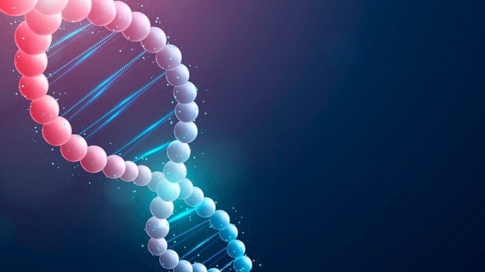

Максим Никитин назвал новый механизм «молекулярной коммутацией», которая заключается в переносе информации при взаимодействии относительно коротких одноцепочечных молекул ДНК/РНК (олигонуклеотидов) или других молекул.
 «Я обратил внимание на необычное свойство ДНК, которое ровно 70 лет оставалось незамеченным – в тени красоты двойной спирали. А именно на то, что для любой одноцепочечной ДНК (оцДНК) существует великое множество других оцДНК с практически любой наперед заданной аффинностью (лат. affinitas — родственность) – свойство, которое я назвал «континуумом аффинностей ДНК», – рассказал он.
В смеси, состоящей из коротких одноцепочечных и не соответствующих (некомплементарных) друг другу олигонуклеотидов, одновременно будут сосуществовать самые различные их комплексы. Варианты этих взаимодействий определяются «сродством» (аффинностью) молекул и в общем случае описываются открытым еще в XIX веке законом действующих масс о зависимости скорости реакции от концентрации участвующих веществ. При этом такие комплексы будут связаны друг с другом и передавать информацию между собой, даже если какие-то два олигонуклеотида не связываются друг с другом напрямую.
Например, в самой простой системе из трех олигонуклеотидов Х, А и В: если А и В не взаимодействуют друг с другом, они все равно могут передать друг другу информацию через посредника – «коммутатор» Х. При этом каждому из них достаточно взаимодействовать с Х очень слабо: увеличение концентрации А приведет к росту количества комплексов ХА, что снизит число комплексов ХВ, хотя А никак не взаимодействовало с В напрямую. Если же в системе находится большее количество олигонуклеотидов, то можно добиться передачи значительного объема информации.Ранее известный комплементарный механизм регуляции допускает около 1012 вариантов регулирования генов (в таком случае существует всего 420=1012 разных 20-нуклеотидных олигонуклеотидов). Российский ученый показал, что при использовании тех же 20-нуклеотидных последовательностей, можно реализовать не менее 10 172 вариаций регуляции деятельности гена. Это в значительной степени превосходит число элементарных частиц во Вселенной, которых «всего» 1080!
Ранее известный комплементарный механизм регуляции допускает около 1012 вариантов регулирования генов (в таком случае существует всего 420=1012 разных 20-нуклеотидных олигонуклеотидов). Российский ученый показал, что при использовании тех же 20-нуклеотидных последовательностей, можно реализовать не менее 10 172 вариаций регуляции деятельности гена. Это в значительной степени превосходит число элементарных частиц во Вселенной, которых «всего» 1080!
Чтобы доказать, что ДНК может образовывать наборы молекул с практически любыми наперед заданными взаимными аффинностями, Никитин показал экспериментальную реализацию большого разнообразия систем, которые по-разному обрабатывают информацию – начиная с систем, включающих всего три суперкоротких олигонуклеотида длиной в семь азотистых оснований, до ячеек памяти, систем вычисления квадратного корня. При этом компьютерное моделирование явления коммутации продемонстрировало устойчивую обработку информации и системой, состоящей из тысячи олигонуклеотидов. Это позволяет создать 572-битную ячейку обработки информации, что превосходит битность всех существующих электронных компьютеров. Предложенная российским ученым модель не имеет ограничения по числу взаимодействующих таким образом олигонуклеотидов.
Вернутся на главную